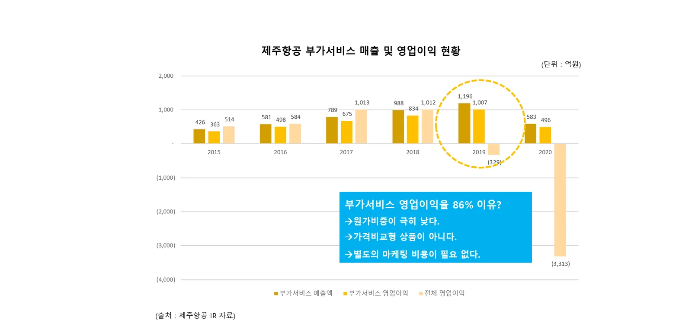

왜 부가서비스인가

- 원가 비중이 낮습니다. 좌석과 수하물 공간은 이미 있는 자원입니다.
- 가격비교형 상품이 아닙니다. 항공권처럼 최저가 경쟁에 휘말리지 않습니다.
- 별도 마케팅 비용이 거의 들지 않습니다. 항공권을 산 고객에게 바로 제안됩니다.
돈은 이렇게 흐릅니다
- 고객이 판매처(여행사·OTA)의 화면에서 항공권과 함께, 또는 발권 후에 부가서비스를 구매합니다.
- 올윈에어가 결제를 처리하고 공급처(항공사·부가서비스사)에 구매 내역을 전달합니다.
- 공급처는 새로운 채널에서 매출을 얻고, 판매처는 판매 수수료를 받습니다.
- 올윈에어는 연동·운영·CS·정산을 맡는 대가로 수수료를 받습니다. 판매처에 별도 개발비나 운영비 부담이 거의 없습니다.
수수료율 등 구체적인 조건은 제휴사별 계약으로 정합니다.
모두가 이기는 구조 (ALLWINOMICS)
공급처 (항공사·부가서비스사)
기존: 자사 사이트에서만 부가서비스 판매
→ 항공권 판매의 70~90%를 차지하는 여행사 채널까지 판매 확대, 판매처별 개별 연동 없이 추가 매출
판매처 (여행사·OTA·플랫폼)
기존: 항공권 판매 시 낮은 인센티브만 수취
→ 부가서비스 판매 수수료라는 새 수익원, 개발·CS·정산 부담 없이 판매
고객
기존: 부가서비스는 항공사 사이트·공항에서만 구매
→ 예약한 곳에서 항공권+부가서비스 원스톱 구매, 선호 좌석 미리 확보, 공항 대기 시간 절감
| 구분 | 비용 절감 | 시간 절감 | 매출 증가 |
|---|---|---|---|
| 고객 | 공항 현장 구매 대비 최대 약 30% 저렴 | 선호 좌석 미리 확보, 공항 대기 시간 절감 | — |
| 판매처 | 항공사별 직접 연동 대비 약 1/8 리소스 | 개발·CS·정산 부담 해소 | 부가서비스 판매 수수료라는 신규 수익원 |
| 공급처 | 판매처별 직접 연동 대비 약 1/20 리소스 | 판매처 관리 부담 해소 | 여행사 채널 매출 추가 |
국내 항공사 8곳, 여행사 20곳 제휴를 가정한 추정치. 할인율은 항공사·상품별로 다릅니다. (2021년 제휴 제안 자료 중)
연결이 늘수록 수익도 커집니다
한 번 연결된 판매처에는 새 공급처와 새 상품이 계속 추가됩니다. 판매처는 추가 개발 없이 팔 상품이 늘어나고, 공급처는 추가 영업 없이 판매처가 늘어납니다. 올윈에어의 서비스가 확장될수록 제휴사의 수익성이 꾸준히 높아지는 구조입니다. 서비스 확장 보기 →
자주 묻는 질문
- 판매처(여행사)는 어떻게 수익을 얻나요?
- 고객이 판매처 화면에서 부가서비스를 구매하면 판매처는 판매 수수료를 받습니다. 항공권 판매 인센티브와 별개인 새로운 수익원이며, 구체적인 조건은 계약으로 정합니다.
- 공급처(항공사)에게는 어떤 이익이 있나요?
- 자사 사이트에 머물던 부가서비스 판매가 여행사·OTA 채널까지 넓어집니다. 판매처마다 따로 연동하지 않아도 되고, 판매처 관리·CS·정산 부담도 줄어듭니다.
- 제휴사가 부담하는 비용이 있나요?
- 올윈에어는 판매가 일어날 때 수수료를 받는 구조라, 제휴사의 초기 개발·운영 부담이 적습니다. 상세 조건은 제휴 협의 때 안내합니다.
올윈에어와 연동을 시작하세요
항공사·부가서비스 공급사, 여행사·OTA·여행 플랫폼 모두 한 번의 연동으로 시작할 수 있습니다. 연동 방식과 일정은 제휴사 환경에 맞춰 협의합니다.
제휴 이메일partnership@allwin.co.kr
대표 연락처 (평일 09:00~18:00)1522-2284